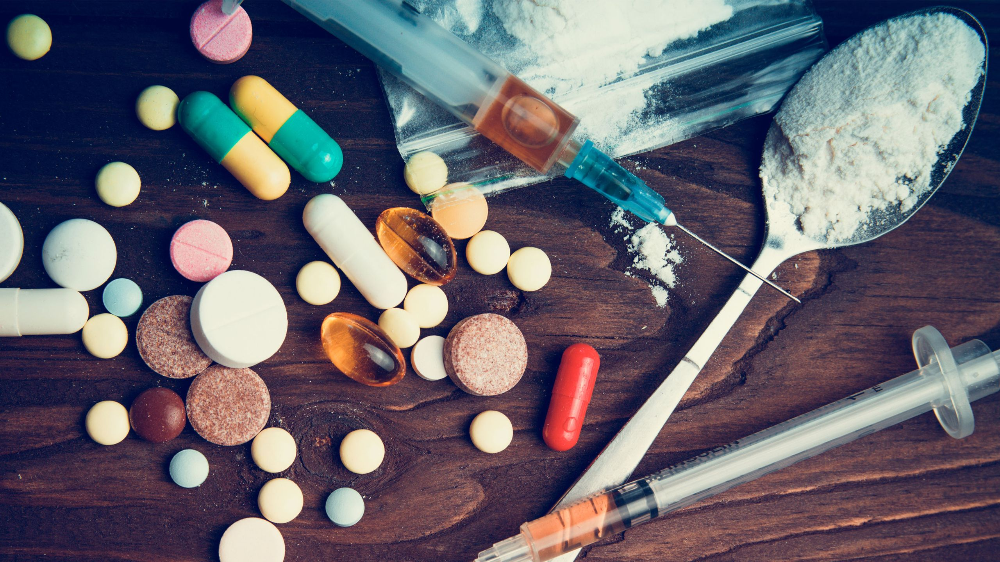

El consumo de drogas, sean legales o ilegales, tiene un impacto significativo en la salud humana. Estos efectos no se limitan al cuerpo físico, sino que también abarcan la mente, las emociones y las relaciones sociales. Comprender cómo las drogas afectan la salud es fundamental para la prevención, la educación y la toma de decisiones responsables.
La adicción es una enfermedad compleja pero tratable. Se caracteriza por el ansia , la búsqueda y el consumo compulsivos de drogas , que persisten incluso si el consumidor es consciente de las graves consecuencias adversas. En algunas personas, la adicción se vuelve crónica, con recaídas periódicas incluso después de largos períodos de abstinencia. Al ser una enfermedad crónica y con recaídas, la adicción puede requerir tratamientos continuos para aumentar los intervalos entre recaídas y disminuir su intensidad. Si bien algunas personas con problemas de sustancias se recuperan y llevan una vida plena, otras requieren apoyo adicional continuo. El objetivo final del tratamiento de la adicción es permitir que la persona controle su consumo indebido de sustancias; para algunos, esto puede significar la abstinencia. Los objetivos inmediatos suelen ser reducir el abuso de sustancias, mejorar la capacidad funcional del paciente y minimizar las complicaciones médicas y sociales del abuso de sustancias y su adicción; esto se denomina " reducción de daños ".
Los tratamientos para la adicción varían ampliamente según el tipo de droga, la cantidad consumida,
la duración de la adicción, las complicaciones médicas y las necesidades sociales de la persona. Determinar el
mejor programa de recuperación para una persona con adicción depende de diversos factores, como la personalidad,
las drogas de elección, el concepto de espiritualidad o religión, las enfermedades mentales o físicas, y la
disponibilidad y asequibilidad de los programas a nivel local.
Circulan diversas ideas sobre lo que se considera un resultado exitoso en la recuperación de la adicción.
Existen programas que priorizan el consumo controlado de alcohol para la adicción al alcohol. La terapia de
reemplazo de opiáceos ha sido un tratamiento médico estándar para la adicción a los opiáceos durante muchos
años.

Los efectos en la salud no son solo teoría. Existen miles de testimonios de personas que han sufrido consecuencias graves:
Los efectos de las drogas en la salud son devastadores y abarcan múltiples dimensiones. No se trata
solo de un
daño físico inmediato, sino de un deterioro progresivo que afecta la mente, las emociones y la vida social. La
prevención y la educación son las mejores herramientas para enfrentar este problema.
Existe poca evidencia que confirme la seguridad o eficacia de la mayoría de las terapias alternativas. Gran
parte de la información disponible actualmente sobre estas terapias deja claro que muchas no han demostrado su
eficacia. Se deben realizar investigaciones bien diseñadas y rigurosamente controladas para evaluar la eficacia
de las terapias alternativas.
Además, nuevas investigaciones sobre los efectos de la psilocibina en fumadores revelaron que el 80% de los
fumadores dejaron de fumar durante los seis meses siguientes al tratamiento, y el 60% permaneció sin fumar
durante los cinco años siguientes al tratamiento